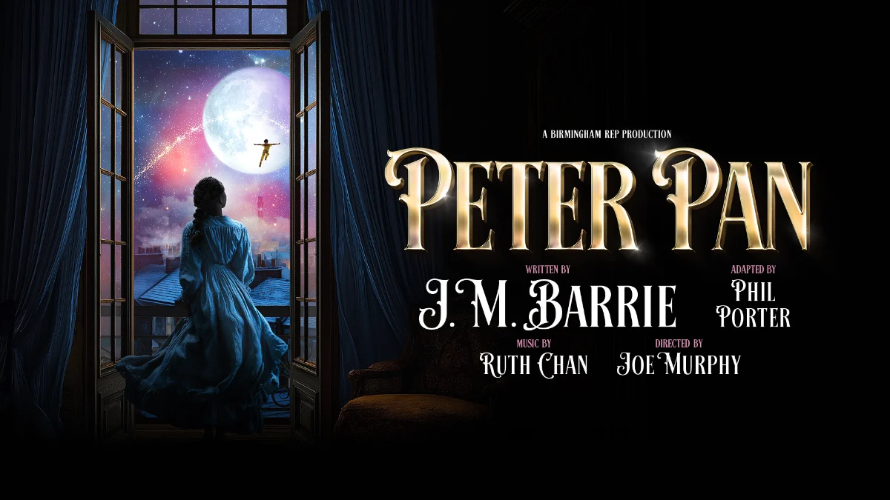

Birmingham Rep has announced full casting for its forthcoming festive production of Peter Pan, J M Barrie’s much-loved children’s story, which runs between Wednesday 18 November 2026 and Sunday 17 January 2027
This new production is adapted by Phil Porter, featuring over 20 original songs by composer Ruth Chan
The cast features Iverson Yabut (A Christmas Carol: A Ghost Story) as Peter Pan, Amber Sylvia Edwards as Wendy, and Hannah McPake taking on the dual roles of Captain Hook and Mrs Darling
Photo Gallery
Venue: Birmingham Rep
Dates: Wednesday 18 November 2026 - Sunday 17 January 2027
Age Guidance: 7+
Tickets: Available at The Rep or by calling 0121 236 4455
- Relaxed (Sun 10 Jan 11am)
- Audio Described (Sat 12 Dec & Sat 9 Jan at 2pm with pre-show Touch Tour at 12:30pm)
- BSL Interpreted (Thu 3 Dec at 10:15am & 2:30pm, Fri 4 Dec at 6:30pm)
- Captioned dates across select November, December, and January performances.